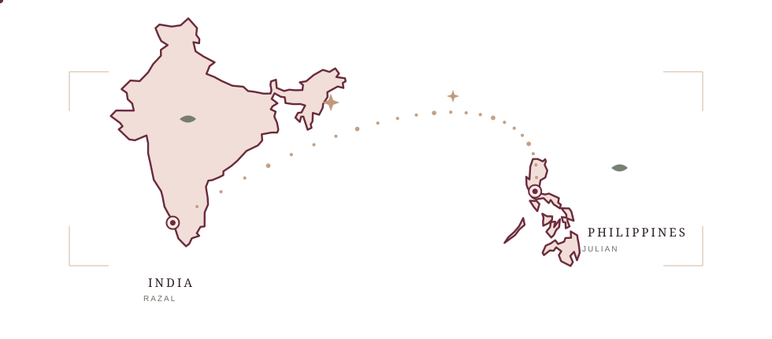
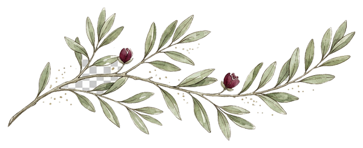
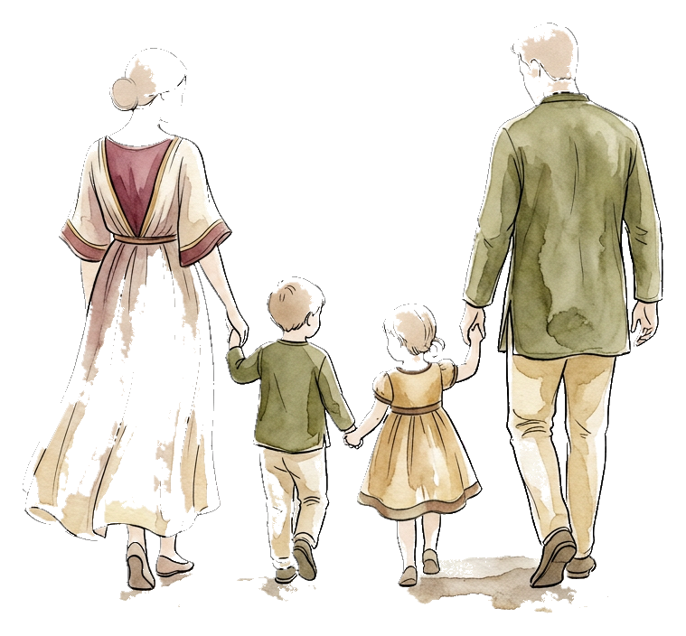
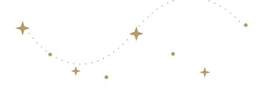
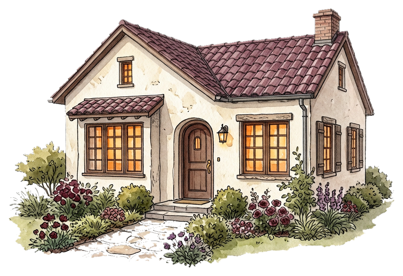
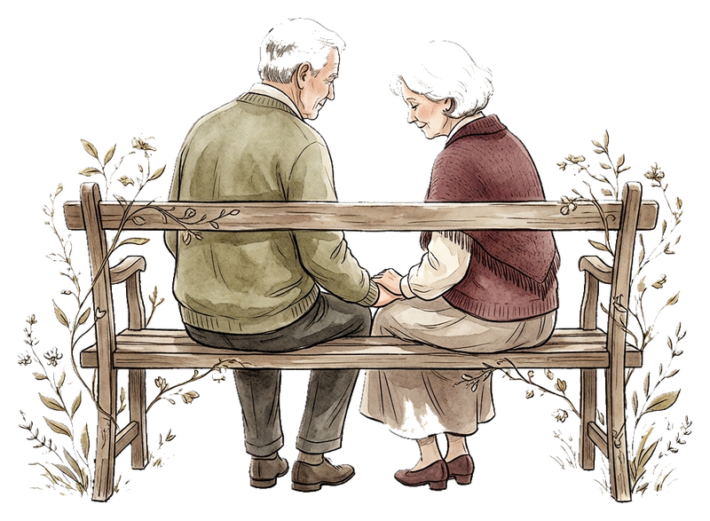

India Philippines
A note, before anything else
Thank you for coming
into my life.
I don't think I ever imagined that one ordinary day would lead me to someone who would become this important to me.
Out of all the people I could have met that day, somehow, I found you.
And somehow, you became part of my days, my thoughts, my happiness, and my heart.
Thank you for finding your way into my life.
Thank you for the conversations, the laughter, the teasing, the little moments, and even the moments when we missed each other.
Thank you for being you.
I may not have a photograph of us standing beside each other yet. But I have something I value even more.
I have all the little memories we created from miles apart.
And I hope this is only the beginning.
the unexpected kind of happiness
A small geography of us
The distance
Somewhere between India and the Philippines,
there is a distance we cannot simply wish away.
But somehow,
you still became close to my heart.


Without even trying
What you became to me
“My favorite notification.”
“My unexpected happiness.”
“My favorite person to talk to.”
“My safe little corner
of the internet.”
My babe.
You became part of my life
without asking for permission.
And somewhere along the way,
I stopped wondering how this happened
and started wondering how I ever lived without it.
The part I keep gently imagining
Someday.
Not tomorrow.
Not because we have to.
Not because the world expects it.
Someday.
When we're both ready.
There is a question I am saving for the end of this letter.
Not before we're ready.
But someday,
when the distance is behind us,
when life has brought us to the same place,
when we can finally build something together...
I hope we arrive there softly.
Together.
no rush, babe — just a future worth walking toward
If life is kind
Our little future
I don't know exactly what our future will look like.
And I don't want to pretend that I know.
But when I imagine it,
I hope there is a home somewhere with our names on it.
- 01
Finding our way
⌂
home. - 02
Building a home
✦
of our own. - 03
Starting a
❋
family. - 04
Growing old
∞
together.
A place where we wake up beside each other. A kitchen where we argue about what to eat. A living room filled with laughter. A little garden we take care of together.
And, if life is kind to us, two little children running through that home.
A little picture in my mind
Maybe someday,
there will be four of us.
You, me,
and two little people
who somehow carry pieces of both of us.
I want to know what it feels like
to come home to you.


There is a light on somewhere
Not a perfect house.
Just ours.
A place where we can grow,
laugh,
fight over stupid things,
make up,
cook together,
raise our children,
and grow old.


The long and ordinary middle
Growing old
I don't only want the beginning with you.
I want the middle.
The ordinary days.
The difficult days.
The birthdays.
The boring Sundays.
The adventures.
The arguments.
The forgiveness.
The laughter.
The quiet evenings.
And one day,
when we're old,
I still want your hand in mine.
I want to grow old with you.
As much time as we are given
Until death,
and after.
If life gives us enough years,
I want to spend them with you.
Until our hair turns grey.
Until our footsteps become slower.
Until we have more stories than plans.
Until death eventually asks us to let go.
And even then,
I hope the love we built remains
in every person,
every memory,
and every little piece of life
we leave behind.
the last page, and my gentlest hope
Julian.
Thank you for coming into my life.
You changed it simply by being in it.
There is no answer you owe me today.
Someday,
when we're both ready...
will you marry me?
And build a little life with me?
Two children.
One home.
A thousand ordinary mornings.
A lifetime of choosing each other.
Until death.
And whatever comes after it.
When you want to answer, let it be gentle and true.
There's no answer you owe me today.
I just wanted you to know where my heart hopes to go.
Love,
Razal
for my babe, Julian